Erkennung und Vorkommen von Sturzbrüchen
Die Mechanik der Bewegung entlang von Sturzbrüchen
Sturzbrüche und Gesteinsfestigkeit
Der Lewis-Sturzbruch
Merkmale des Lewis-Sturzbruchs
Einführung
Ein Verwerfung ist ein Bruch in der Erde, entlang dessen Bewegung stattgefunden hat. Es gibt verschiedene Arten von Verwerfungen, und die Art der Verwerfung, die entsteht, wird durch die Art der auf ein Gestein wirkenden Spannung kontrolliert (Kompression, Zug oder Scherung). Stossverwerfungen entstehen durch kompressive Spannungen und bilden sich daher häufig dort, wo zwei tektonische Platten kollidieren, beispielsweise wo eine ozeanische Platte subduziert wird (wie entlang der Aleuten) oder wo zwei kontinentale Platten kollidieren und eine Gebirgsrange entsteht (wie die Himalayas).
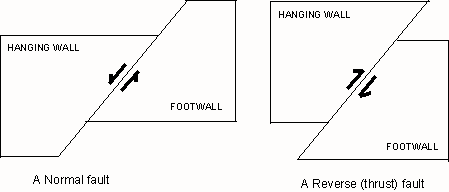
Abbildung 1. Querschnittsansicht einer Normalverschiebung (entstanden durch Zugspannungen) und einer Sturzverschiebung (entstanden durch Druckspannungen)
Für weitere Informationen zu Störungen und Plattentektonik gehen Sie zu diesen Seiten:
Diese dynamische Erde
http://pubs.usgs.gov/publications/text/dynamic.html
Störungen
http://www.dc.peachnet.edu/~pgore/geology/geo101/faults.htm
Das Material zum Jungen-Erde-Kreationismus (YEC) in diesem Artikel stammt größtenteils aus dem Buch Das Genesishochwasser (abgekürzt als TGF) von John Whitcomb und Henry Morris, das erstmals 1961 veröffentlicht wurde (obwohl die von mir verwendete Ausgabe 1995 erschien). Dieses Buch spielte eine wichtige Rolle bei der Entstehung der modernen kreationistischen Bewegung. Dieses Buch wird vom Institute for Creation Research (ICR) Buchladen als „die definitivste Behandlung der biblischen und wissenschaftlichen Beweise für das globale Hochwasser zu Noahs Zeiten" beschrieben. Dies ist von Bedeutung, weil es darauf hinweist, dass das ICR TGF immer noch als korrekt betrachtet, und tatsächlich dient TGF als Quelle für eine Menge jüngeren kreationistischen Materials. Die ersten drei Behauptungen aus TGF, die ich behandle, betreffen Sturzverwerfungen im Allgemeinen, während die vierte und fünfte speziell die Lewis-Verwerfung (auch als Lewis-Übersturzverwerfung bezeichnet) behandeln, eine große Verwerfung, die in Teilen von Montana und Alberta freigelegt ist.
Anerkennung und Vorkommen von Sturzverwerfungen
Whitcomb und Morris stellen fest:
„In jeder gebirgigen Region auf jedem Kontinent scheinen es zahlreiche Beispiele von angeblich alten Schichten zu geben, die auf jüngeren Schichten aufliegen. In Abwesenheit eindeutiger struktureller Beweise im Gegenteil würde man natürlich annehmen, dass die untersten Schichten notwendigerweise zuerst abgelagert worden sein müssen und daher älter sein. Aber die Fossilien scheinen diese Annahme oft zu widerlegen, und es sind die Fossilien, die das zugewiesene Formationalter bestimmen." (TGF, S. 180)
Obwohl Sturzverwerfungen tatsächlich häufig sind, irren sich Whitcomb und Morris bezüglich der Natur der Gesteine, die mit Sturzverwerfungen verbunden sind. Ihre Behauptung über Fossilien basiert auf einem YEC-Missverständnis darüber, wie Gesteine relativ zueinander datiert werden und wie die geologische Säule konstruiert wurde. Nach YECs wie Morris werden die Altersunterschiede dieser Einheiten relativ zueinander unter Verwendung von Zirkelschlüssen bestimmt; mit anderen Worten werden Gesteine unter Verwendung einer angenommenen evolutionären Progression datiert:
"Das heißt, alte Gesteine enthalten Fossilien von Organismen in einem frühen Stadium der Evolution; jüngere Gesteine enthalten Fossilien, die ein fortgeschritteneres Stadium der Evolution repräsentieren. Wir wissen natürlich, welche Gesteine alt sind, weil sie diejenigen am Boden sind, mit den jüngeren oben. Aber dann haben wir gerade bemerkt, dass es an vielen Stellen einen umgekehrten Ablauf gibt. Wir wissen, dass sie umgekehrt sind, aufgrund des evolutionären Stadiums ihrer jeweiligen Fossilien." (Morris, 1983).
Und auch:
"Die Gesteinsformationen der Erde sind nicht mit Ecksteinen ausgestattet, die ihre angenommenen Entstehungsdaten bescheinigen. Wie bestimmen Geologen dann das Alter eines bestimmten Gesteins und ob ein Gestein älter als ein anderes ist?
Die Antwort, etwas vereinfacht, aber dennoch im Wesentlichen korrekt, ist, dass das Datum durch die enthaltenen Fossilien bestimmt wird. Wenn die Fossilien nur einfache marine Organismen sind, dann muss es in einem der paläozoischen Systeme datiert werden; wenn es fossile Säugetiere enthält, dann muss es zänozoisch sein. Mit anderen Worten ist die Annahme einer über lange Zeiträume andauernden evolutionären Entwicklung der organischen Welt der grundlegende Schlüssel zur Identifizierung und Datierung der verschiedenen Komponenten der geologischen Säule.
Es ist natürlich wahr, dass auch andere Faktoren (z. B. die physikalischen Eigenschaften der Gesteine, die Überlagerung einer Schicht über einer anderen usw.) zur Korrelation und Unterscheidung verschiedener Formationen an einem bestimmten Ort verwendet werden. Aber每当 es zu einem Konflikt zwischen den physikalischen und paläontologischen Beweisen kommt, gilt immer das paläontologische Beweismittel. Und wenn es darum geht, Gesteine in einer Region mit denen in einer entfernten Region zu korrelieren, ist die evolutionäre Sukzession der Fossilien immer das Hauptkriterium." (Morris, 1967)
Morris' Erklärung der relativen Datierung ist nicht „etwas vereinfacht", sie ist völlig falsch. YECs sind sich völlig in Bezug auf die Prinzipien, die zur Konstruktion des geologischen Säulensystems verwendet wurden, im Irrtum, zu denen das Prinzip der Superposition (jüngere Gesteine werden auf ältere Gesteine abgelagert) und das Prinzip der durchschneidenden Beziehungen (Merkmale wie Verwerfungen sind jünger als die Gesteine, die sie durchschneiden) gehören. YECs sind sich auch in Bezug auf die Verteilung von Fossilien im geologischen Record im Irrtum. Morris hat beispielsweise behauptet, dass Gesteine, die nur „einfache" marine Fossilien enthalten, automatisch dem Paläozoikum zugeordnet werden, obwohl es präkambrische, paläozoische, mesozoische und rezente Gesteine gibt, die nur „einfache" marine Fossilien enthalten. Mit anderen Worten, „einfache" marine Fossilien erscheinen erstmals im Paläozoikum (und im späten Präkambrium), bestehen jedoch bis zum heutigen Tag fort.
Für eine ausführlichere Diskussion über die geologische Säule und die Prinzipien der relativen Datierung folgen Sie diesen Links:
Radiometrische Datierung, Paläosole und die geologische Säule
http://baby.indstate.edu/gga/pmag/paleosol.htm
Interpretation geologischer Schnitte
http://www.athro.com/geo/seframe.html
Die geologische Zeitskala in historischer Perspektive
http://www.ucmp.berkeley.edu/exhibit/histgeoscale.html
Die geologische Säule und ihre Implikationen für die Sintflut
http://www.talkorigins.org/faqs/geocolumn/
Geologische Zeitskala
http://www.talkorigins.org/faqs/timescale.html
Radiometrische Datierung und die geologische Zeitskala
http://www.talkorigins.org/faqs/dating.html
In einem Versuch, ihre Behauptung zu stützen, dass „in der falschen Reihenfolge" liegende Gesteinsschichten häufig vorkommen, verweisen Whitcomb und Morris ihre Leser auf eine Abhandlung zweier Geologen (Hubbert und Rubey, 1959) für „...eine umfassende Auflistung von Gebieten dieser Art", wobei sie Gebiete mit Störungszonen (thrust faults) meinen. Hubbert und Rubey enthalten in ihrer Abhandlung einen Abschnitt zur Geschichte der Anerkennung von Störungszonen und zufolge ihrer Angaben wurden Störungszonen (auch als Überstürzungen bekannt) erstmals 1826 in der Nähe von Dresden, Deutschland, erkannt, wo ein Geologe des frühen 19. Jahrhunderts ein Granitgestein über einem Schiefergestein beobachtete. Diese Störungszone basierte eindeutig nicht auf „in der falschen Reihenfolge" liegenden Fossilien, da Granit ein magmatisches Gestein ist. Hubbert und Rubey diskutieren mehrere weitere Beispiele von Störungszonen, die entweder magmatische oder metamorphe Gesteine betreffen, einschließlich einer Störung in der Nähe von Quebec City, Kanada (1860 anerkannt), und der schottischen Highlands (in der zweiten Hälfte des 19. Jahrhunderts anerkannt). Diese Beispiele zeigen, dass die Behauptung von Whitcomb und Morris, Störungszonen würden vorgeschlagen, um Folgen von Fossilien zu erklären, die nicht in der korrekten „evolutionären Stufe" liegen, falsch ist, da es viele Beispiele von Störungszonen in magmatischen und metamorphen Gesteinen gibt, von denen keines Fossilien enthält. Ich liefere diese Beispiele, um zu demonstrieren, dass Publikationen, die bis in das frühe 19. Jahrhundert zurückreichen, Störungszonen in nicht fossilführenden Gesteinen diskutieren, und doch machten Whitcomb und Morris 1961 immer noch ihre Behauptung.
Dies bedeutet nicht, dass es keine Sturzverwerfungen gibt, die sedimentäre Gesteine auf andere sedimentäre Gesteine legen; diese Art von Sturzverwerfungen ist ebenfalls häufig (Hubbert und Rubey geben mehrere Beispiele), jedoch ist die Tatsache, dass es Sturzverwerfungen gibt, die nicht sedimentäre Gesteine betreffen, ein klarer Hinweis darauf, dass Behauptungen, die die Anerkennung von Sturzverwerfungen auf biologischer Evolution basieren, falsch sind. In einem Fall, in dem ältere sedimentäre Gesteine über jüngere sedimentäre Gesteine geschoben wurden, ist es zwar richtig, dass Gesteine, die ältere Fossilien enthalten, über Gesteinen gefunden werden, die jüngere Fossilien enthalten (unter der Annahme, dass beide Gesteine fossilführend sind), jedoch möchte ich erneut betonen, dass das Alter eines Fossils nicht aufgrund seiner Position in einer angenommenen evolutionären Progression zugewiesen wird (wie Morris es darlegt), und dass dort, wo solche Verwerfungen auftreten, klare Hinweise auf Verwerfungstätigkeit vorliegen. Diese Evidenz wird später in diesem Papier diskutiert.
Es ist auch wichtig zu beachten, dass Sturzverwerfungen (thrust faults) in der Regel in gebirgigen Gebieten (oder Gebieten, die einst gebirgig waren, aber seither erodiert wurden) vorkommen, und Gebirge entstehen, wo sich zwei tektonische Platten kollidieren. Offensichtlich werden diese Kollisionen, bei denen tektonische Platten mit einer Dicke von 10 km über 100 bis 1000 km hinweg auftreten, hohe Spannungen erzeugen, die zu großräumiger Verformung führen, wovon Sturzverwerfungen ein Beispiel sind. Große Falten (manchmal als Rand von Gebirgszügen) sind eine weitere Art der Verformung, die mit solchen Kollisionen verbunden ist.
Die Mechanik der Bewegung entlang von Sturzbrüchen
Whitcomb und Morris stellen fest:
"Es ist anerkannt, dass Phänomene dieser Art in kleinem Maßstab stattgefunden haben, an bestimmten Orten, wo es hinreichende Beweise für intensive vergangene Verwerfungen und Falten gibt. Allerdings liegen diese sichtbaren Bestätigungen des Konzepts definitiv im kleinen Maßstab, meist in Bezug auf einige hundert Fuß, wohingegen viele der großen Sturzbrüche Gebiete von hundert oder sogar tausend Quadratmeilen einnehmen. Es scheint fast fantastisch, sich solche riesigen Gebiete und Massenhaufen von Gestein wirklich so verhalten zu lassen, es sei denn, wir sind bereit, einen Katastrophismus anzunehmen, der den Noachischen Flut so ruhig erscheinen lässt im Vergleich! Sicherlich ist das Prinzip der Uniformität unzureichend, um sie zu erklären. Nichts, was wir über gegenwärtige Erdbewegungen÷über die Druck- und Scherfestigkeit von Gestein, über das plastische Fließen von Gesteinsmaterialien oder über andere moderne physikalische Prozesse÷wissen, bietet eine beobachtungsbezogene Grundlage, um glauben zu können, dass solche Dinge jetzt geschehen oder jemals geschehen könnten, außer unter extrem ungewöhnlichen Bedingungen. "(Betont hinzugefügt) (TGF, S. 180-181)
"Das Problem des Sturzbruchs wird noch schwieriger, wenn versucht wird, es aus der Sicht der Ingenieurmechanik zu verstehen. Die Masse des Gesteins in der Lewis-Sturzbruchschieferplatte muss etwa acht hunderttausend Milliarden Tonnen gewogen haben! Angenommen zum Zwecke der Argumentation, dass eine irgendwie ausreichende Kraft in der Erdkruste erzeugt werden könnte, um eine solche Masse in Bewegung zu setzen, sowohl mit einer vertikalen als auch einer horizontalen Komponente (vertikal gegen die Schwerkraft und horizontal gegen die Reibungskraft entlang der Gleitfläche), folgt es dennoch nicht, dass wirklich große Blöcke auf diese Weise bewegt werden könnten. Es kann berechnet werden, auf der Grundlage des Wissens über bekannte Reibungskoeffizienten für gleitende Blöcke, dass so viel Reibungs- (Scher-) Spannung in einem großen Block entwickelt würde, dass das Material selbst in Scherung oder Druck versagen würde und daher überhaupt nicht als zusammenhängender Block transportiert werden könnte." (Betont hinzugefügt) (TGF, S. 191)
Wir erkennen natürlich an, dass es Hinweise auf Falten und Brüche entlang vieler der Verwerfungsflächen gibt, und dies kann sehr wohl darauf hindeuten, dass es eine gewisse Bewegung der oberen und unteren Schichten relativ zueinander gegeben hat. Aber dies beweist sicherlich nicht, dass die oberen Schichten die vielen Meilen bewegt haben, die von der Sturzbruchtheorie erforderlich wären!" (Betont hinzugefügt) (TGF, S. 198)
Whitcomb und Morris machen zwei allgemeine Behauptungen: Die Spannungen, die erforderlich sind, um Störungssprünge (thrust faults) zu verursachen, sind unmöglich groß; und es gibt keine Hinweise auf große Bewegungen entlang von Störungssprüngen. Ihre Aussage über die Menge der Verschiebung entlang von Störungssprüngen (im dritten Zitat) ist eine potenzielle Quelle der Verwirrung. Die Aussage, dass Verschiebungen von „vielen Meilen … (von) der Überwurzelungstheorie gefordert werden", ist potenziell irreführend. Ein Störungssprung ist nichts anderes als eine Störung, über die der Deckblock (hanging wall block) sich relativ zum Grundblock (footwall block) nach oben bewegt hat, und die Menge der Verschiebung entlang einer Störung (unabhängig von der Art der Störung) wird für Störungen jeder Größe auf die gleiche Weise berechnet: Der Abstand zwischen einem Merkmal, das verschoben wurde und auf beiden Seiten der Störung vorhanden ist, wird gemessen, und dieser Abstand entspricht der Menge der Verschiebung entlang einer Störung. Im Fall großer Störungssprünge sind solche Merkmale um Zehner- bis Hunderte von Kilometern verschoben.
|
Abbildung 2. Satellitenbild der Appalachen in Pennsylvania. USGS-Bild von TerraServer |
Abbildung 3. Die Appalachen in der Nähe der Chesapeake Bay. Bild von NASAs Visible
Earth |
{kind=link}
{kind=link}
Die Absurdität der Behauptung von Whitcomb und Morris, dass die mit Störungszonen verbundene Verformung nur kleinräumig ist (Hunderte von Fuß), lässt sich leicht durch die Untersuchung von Luft- und Satellitenbildern verformter Bereiche der Erde belegen. In den vorangehenden Bildern sind zwei Satellitenfotos von unterschiedlichen Teilen der Appalachen zu sehen, und die Verformung ist sehr deutlich großräumig; die Falten erstrecken sich über die gesamte Gebirgsrange.
Technische Mechanik und das Verhalten von Störungen
Offensichtlich gab es in der Vergangenheit große Störungen, und somit muss es möglich gewesen sein, die Spannungen zu erzeugen, die für ihre Entstehung erforderlich waren. Die Behauptung von Whitcomb und Morris, dass die Spannungen, die notwendig sind, um Bewegung entlang einer Störung zu verursachen, dazu führen würden, dass die Gesteine, die bewegt werden, zerbrechen, ist falsch, und sie veranschaulichen dies, wenn sie behaupten, dass es Beweise für zumindest einige Bewegung entlang von Störungsebenen gibt (obwohl sie unberechtigt leugnen, dass es große Mengen an Bewegung geben kann). Wenn es möglich ist, eine Masse von Gestein so groß wie die bei Störungen involvierten, auch nur für eine kurze Distanz zu bewegen, dann ist ganz klar, dass die Kräfte, die notwendig sind, um diese Bewegung zu verursachen, die Gesteinsmasse nicht zerbrochen haben.
Die Behauptung von Whitcomb und Morris, dass Experimente zur Ingenieur-Steinmechanik das Verhalten von Störungen genau beschreiben, ist aus vielen Gründen falsch. Wenn sich eine Störung bewegt (beispielsweise während eines Erdbebens), findet die Bewegung nicht überall entlang der Störung statt, und die Teile der Störung, die sich bewegen, sind nicht zur gleichen Zeit in Bewegung. Ein Erdbeben entsteht an einem Punkt entlang einer Störung, und die durch das Erdbeben verursachte Verformung breitet sich von diesem Punkt aus entlang der Störung aus, bis sie ausklingt. Die Verformung tritt auch nicht über die gesamte Länge der Störung auf. Diese Beobachtungen basieren auf Aufzeichnungen von Erdbebenbewegungen, wie denen, die mit dem Großen Alaskatischen Erdbeben in Verbindung stehen und von Seismographen aufgezeichnet wurden. Ebenso führt ein Erdbeben entlang der San-Andreas-Störung nicht zu einer Bewegung entlang der gesamten Störung. Die Behauptung, dass die Spannungen, die erforderlich sind, um eine Bewegung entlang einer Stoßstörung zu verursachen, groß genug sind, um die Gesteine zu zertrümmern, basiert auf der Annahme, dass die Bewegung entlang der Störung gleichzeitig stattfindet. Diese Annahme ist nicht gültig, und alle Berechnungen, die auf dieser Annahme basieren, werden falsch sein.
Mehrere unabhängige Beobachtungen deuten ebenfalls darauf hin, dass die Ingenieurmechanik die Bewegung entlang eines Bruchzuges nicht genau beschreibt; mit anderen Worten verhalten sich natürliche Bruchzüge nicht so, wie es Laborversuche vorhersagen (für einen Überblick über die Stärke des San-Andreas-Bruchzuges siehe Zoback, 2000).
Die Annahmen, auf denen die Behauptungen von Whitcomb und Morris beruhen, sind jedoch falsch; das stärkste Argument gegen die Behauptung von Whitcomb und Morris, dass Sturzverwerfungen physikalisch unmöglich seien, besteht darin, dass es weltweit viele aktive Sturzverwerfungen gibt. Diese Beobachtung macht die Behauptung, dass Sturzverwerfungen physikalisch unmöglich seien, unhaltbar.
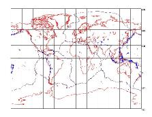
{kind=link}
Abbildung 4 zeigt die Standorte aller Sturzbeben, die vom National Earthquake Information Center (NEIC) von Januar 1998 bis Dezember 2000 aufgezeichnet wurden (die schwarzen Linien sind Plattengrenzen). Die durch ein Erdbeben erzeugten Bodenbewegungen werden auf Seismogrammen aufgezeichnet, und diese Seismogramme können verwendet werden, um das sogenannte Herdmechanismus zu erstellen. Aus diesem Plot lässt sich leicht erkennen, ob die Bewegung, die das Erdbeben verursacht hat, ein Sturz-, Normal- oder Streichverschiebungsbeben war. Dieser Prozess wird an diesem Link diskutiert:
Fokalmuster
http://quake.usgs.gov/recenteqs/beachball.html
Das NEIC führt ein Verzeichnis von Fokalmustern für Erdbeben mit einer Körperwellenmagnitude von 5,5 oder höher. Die Karte wurde unter Verwendung der Fokalmuster aus diesem Verzeichnis erstellt, das unter folgendem Link zu finden ist:
Schnelle Moment-Tensor-Lösungen des NEIC
http://wwwneic.cr.usgs.gov/neis/FM/qmom.html
Die meisten Erdbeben ereigneten sich an Subduktionszonen (wo eine ozeanische Platte unter eine andere ozeanische Platte oder eine kontinentale Platte subduziert wird). Dies ist nicht die Art von Umgebung, unter der die Lewis-Stoßzone aktiv war. Die Erdbeben in den Anden, den Himalaya, Nordafrika und im gesamten Iran ereigneten sich entlang von Verwerfungen, die der Lewis-Stoßzone ähnlich sind. Es gibt auch viele aktive Stoßverwerfungen in Südkalifornien, und die Küsten- und Transversalgebirge wurden entlang solcher Verwerfungen angehoben. Diese Abbildung zeigt, dass nicht nur Stoßverwerfungen physikalisch möglich sind, sondern sie auch sehr häufig vorkommen.
Stoßverwerfungen und Gesteinsfestigkeit.
Die Behauptung, dass Stoßverwerfungen nur gebildet worden sein könnten, "während die Schichten noch relativ weich und plastisch waren", ist falsch und wird leicht durch die Beobachtung widerlegt, dass es viele aktive Stoßverwerfungen in Gesteinen gibt, die nicht "weich und plastisch" sind. Eine weitere einfache Beobachtung, die diese Vorstellung widerlegt, ist das Vorkommen von synorogenen Konglomeraten, die mit Stoßverwerfungen verbunden sind (ein Orogenese bezieht sich auf einen Gebirgsbildungsprozess, und ein synorogen ist einer, der während der Orogenese entstand). Während die Stoßverwerfungen aktiv sind, wird Material aus den Bereichen, die durch die Verwerfung angehoben werden, erodiert, und ein Gesteinstyp, der als Konglomerat bekannt ist und aus Klüften besteht, die von vorhandenem Gestein abgebrochen wurden, bildet sich häufig während dieses Prozesses. Die Kieselsteine wurden ursprünglich von einem vorhandenen Gestein abgebrochen und zu ihrem aktuellen Standort transportiert (wiederum sind Flusskiesel ein hervorragendes Beispiel), und im Fall eines synorogenen Konglomerats wurden die Klüfte von den Gesteinen abgebrochen, die entlang der Stoßverwerfungen angehoben wurden. Dies zeigt eindeutig, dass diese Gesteine hart waren und nicht "relativ weich und plastisch", und somit ist die Behauptung, dass Stoßverwerfungen nicht in Gestein auftreten können, falsch.
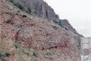 |
Abbildung 5. Ein synorogenes Konglomerat im nordöstlichen Utah. Dieses Konglomerat wurde während der Sevier-Orogenese abgelagert, derselben Ereignis, während derer die Lewis-Stoßzone gebildet wurde; verwandte Stoßstörungen sind in den Bergen in diesem Gebiet üblich. |
{kind=link}
Der Lewis-Schieber
Whitcomb und Morris zitieren Walters Lammerts Beschreibung des Lewis-Schiebers:
" . . . an der tatsächlichen Kontaktlinie waren immer sehr dünne Schieferlagen vorhanden. Darüber hinaus waren diese sowohl mit dem oberen Altyn-Kalkstein (ältester der Präkambrium-Serie) als auch mit den unteren Kreide-Schieferlagen verfestigt. Tatsächlich haben sich an einigen Stellen entlang der fast ein Viertel Meile langen exponierten Kontaktlinie der Kalkstein und die Kreide an der Kontaktlinie getrennt. Oft, wo dies vorgekommen ist, klebt die dünne Schicht weichen Schiefers an dem oberen Block des Altyn-Kalksteins fest. Dies scheint deutlich darauf hinzuweisen, dass kurz vor der Ablagerung des Altyn-Kalksteins und nach dem Neigen der Kreide-Schichten (Neigen in einigen Gebieten nur – andere haben perfekt konforme horizontale Kontaktlinien) eine dünne, waferartige Schicht von einem Achtel bis zu einem Sechzehntel Zoll Schiefer abgelagert wurde. sorgfältige Untersuchung der verschiedenen Standorte ergab keine Anzeichen für jegliches Reib- oder Gleitverhalten oder Slicken-Sides, wie man es auf der Hypothese eines riesigen Überschiebers erwarten würde. Eine weitere erstaunliche Tatsache war das Vorkommen von zwei vier Zoll dicken Schichten Altyn-Kalkstein, die mit Kreide-Schiefer interkalariert waren. Diese traten immer unterhalb der allgemeinen Kontaktlinie von Altyn-Kalkstein und Schiefer auf. Ebenso sorgfältige Untersuchung dieser Interkalationen zeigte keine geringste Anzeichen von abrasiver Wirkung, wie man sie erwarten würde, wenn diese zwischen Schieferlagen nach vorne geschoben worden wären, wie die Überschieber-Theorie es verlangt." (TGF, S. 189-190).
Lammerts scheint zu denken, dass ein Kontakt, der parallel zur Schichtung verläuft, konform ist. Das ist falsch; es gibt eine Art von Diskordanz (eine erosive Oberfläche im Gesteinsbericht), die als Diskordanz bezeichnet wird und parallel zur Schichtung verläuft. Abschnitt 5 des folgenden Links bespricht die verschiedenen Arten von Diskordanzen:
Geologische Strukturen
http://courses.smsu.edu/ejm893f/creative/glg110/GeoStruct.html
Der Lewis-Stoß ist jedoch keine Diskordanz, sondern eine Störung, bei der ältere Gesteine auf jüngere aufgestoßen wurden. Diese Bewegung, trotz der Behauptungen des jungen-Erde-Kreationismus, führte zu einer Verformung, die leicht sichtbar ist.
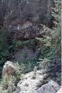 |
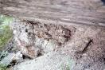 |
| Abbildung 6. Der Lewis-Stoß im Glacier National Park. Die Stoßfläche befindet sich an der Basis des Überhangs, der sich in der Mitte des Bildes befindet. | Abbildung 7. Eine Nahaufnahme der Stoßfläche an dieser Stelle. Die Gesteine unterhalb der Verwerfungsfläche sind stark deformiert. |
{kind=link}
{kind=link}
Abbildungen 6 und 7 dokumentieren einen sehr gut freigelegten Abschnitt des Lewis-Thrusts im Glacier National Park. Die Verformung der darunterliegenden Gesteine ist in Abbildung 7 sichtbar.
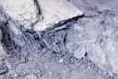 |
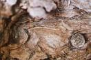 |
| Abbildung 8. Eine kleine Falte entlang der Bruchebene, die durch die Einpressung des Bruchmaterials in das darüberliegende Gestein entstanden ist. | Abbildung 9. Eine weitere Falte in der Nähe des Bruchkontakts. |
{kind=link}
{kind=link}
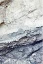 |
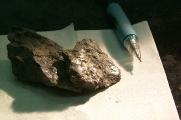 |
| Abbildung 10. Eine Nahaufnahme des Stosskontakts (der Übergang von hell zu dunklem Gestein in der Mitte des Fotos). | Abbildung 11. Eine Probe des dunklen Gesteins unterhalb des Bruchzonen. Beachten Sie die stark polierten Oberflächen der Proben. |
{kind=link}
{kind=link}
Die Abbildungen 6-11 zeigen alle klassischen Indikatoren für Verwerfungsverschiebungen; intensive Zerklüftung, Brekzierung, polierte Oberflächen und Gleitlinien können entlang der Lewis-Verwerfung gefunden werden.
Numbers (1993) berichtet, dass die von Lammerts beschriebene Aufschlusstelle nicht der Lewis-Thrust ist, sondern tatsächlich ein Gebiet befindet, das 200 ft über diesem Verwerfung liegt. Dies ungültigiert Lammerts' Behauptungen, da seine Beschreibungen von „dünnen Schichten von Schiefer" nicht erstellt wurden, während er den Lewis-Thrust untersuchte. Eine ähnliche Struktur existiert jedoch entlang des Lewis-Thrust und ist tatsächlich eine Struktur, die vielen Verwerfungen gemeinsam ist.
Die dünne „Schiefer"-Schicht, die Lammerts beschreibt, ähnelt Beschreibungen von Ton-Fault-Gestein; ein Material, das sich entlang von Störungen durch eine Kombination aus Abrieb der umgebenden Gesteine und verschiedenen chemischen Reaktionen, die entlang der Störung stattfanden, bildet. Das Gestein entlang der Lewis-Störung ist in den darüberliegenden Fotografien zu sehen; das dunkle Gestein besteht aus Ton-Fault-Gestein und stark verformtem, verändertem Schiefer. Der Schiefer ist stark zerklüftet, und in der Nähe der Störung (innerhalb von ungefähr 1 oder 2 Metern) weisen die Fragmente hochpolierte Oberflächen auf, von denen einige Slickenlinien aufweisen (siehe das darüberliegende Bild rechts). Das Gestein entlang der Lewis-Störung weist eine variable Dicke auf, kann aber bis zu ungefähr einem Meter dick sein und hat eine andere mineralogische Zusammensetzung als der unverformte Schiefer. Die Veränderungen in den Tonmineral-Assemblagen über die Lewis-Störung hinweg (Vrolijk und van der Pluijm, 1999) sind aus anderen geologischen Settings, wie der Golfküste, wohlbekannt und erfordern die Zufuhr großer Energiemengen. Im Fall der Lewis-Störung ist diese Energie Verformungsenergie, die das Ergebnis von Bewegung entlang der Störung ist.
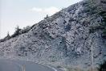 |
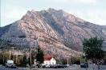 |
| Abbildung 12. Verformte Kreide-Schiefer unmittelbar außerhalb des Glacier National Park. | Abbildung 13. Mt. Crandell im Waterton Lakes National Park in Alberta. Mehrere große Störungszonen sind freigelegt, am deutlichsten an der Basis der geneigten Schichten links im Foto. |
{kind=link}
{kind=link}
Abbildungen 12 und 13 zeigen einige der großräumigen Verformungen, die mit den Lewis- (und verwandten) Stößen verbunden sind. Im linken Bild sind verformte Schiefer zu sehen, die dem Lewis-Stoss zugrunde liegen. Im rechten Bild werden mehrere Störungszonen dargestellt, die mit dem Lewis-Stoss in Verbindung stehen (die deutlichste befindet sich an der Kontaktstelle zwischen steil- und flach einfallenden Schichten). Offensichtlich ist die mit dem Lewis-Stoss verbundene Verformung nicht auf kleinräumige Merkmale beschränkt.
Um ihre Behauptung zu stützen, dass der Lewis-Schub eine Schichtfläche ist, zitieren Whitcomb und Morris zwei Geologen wie folgt:
"Ross und Rezak sagen: 'Die meisten Besucher, insbesondere diejenigen, die auf den Straßen bleiben, haben den Eindruck, dass die Belt-Schichten ungestört sind und heute fast so flach liegen, wie sie es beim Ablagern im Meer vor so vielen Jahren taten'"(TGF S. 187)
Das Zitat aus dem ursprünglichen Papier und die folgenden Sätze lauten wie folgt:
"Die meisten Besucher, insbesondere diejenigen, die auf den Straßen bleiben, erhalten den Eindruck, dass die Belt-Schichten ungestört sind und fast so flach liegen wie damals, als sie im Meer abgelagert wurden, das vor so vielen Millionen Jahren verschwunden ist. Tatsächlich sind sie gefaltet, und in bestimmten Zonen sind sie sogar stark gefaltet. Von Punkten auf oder in der Nähe der Wanderwege im Park ist es möglich, Stellen zu beobachten, an denen die Schichten der Belt-Serie, wie sie in Aufschlüssen auf Kuppen, Klippen und Canyonwänden sichtbar sind, gefaltet und zerknittert sind, fast so komplex wie die weicheren, jüngeren Schichten in den Bergen südlich des Parks und in den Great Plains, die den Park im Osten angrenzen." (Ross und Rezak 1959, S. 420) (Der von Whitcomb und Morris zitierte Text ist fett gedruckt).
Es ist offensichtlich, dass Whitcomb und Morris versuchen, Ross und Rezak so darzustellen, als würden sie behaupten, die Gesteine seien unverformt, während sie tatsächlich darauf hinweisen, dass die Gesteine stark verformt sind. Whitcomb und Morris lassen zudem das Wort „Million" aus ihrem Zitat weg. Dies ist ein klares Beispiel für ein aus dem Zusammenhang gerissenes Zitat.
Morris hat seine Verwendung dieses Zitats verteidigt, das ihm durch einen Artikel bekannt wurde, der 1981 in einer ICR-Publikation veröffentlicht wurde:
Von The Anti-Creationists, ICR Impact #97 (Morris, 1981)
"Der Autor zitierte zwei angeblich aus dem Zusammenhang gerissene Äußerungen von Kreationisten, eine von Dr. Gary Parker, die angeblich andeutete, dass Dr. Stephen Gould den Kreationismus fördere, und eine von diesem Autor, die angeblich behauptete, dass zwei evolutionsbiologische Geologen übereinstimmend festgestellt hätten, dass die Schichten des großen Lewis-"Überstoßes" alle flach und ungestört seien. Die Tatsache ist, dass wir stets sorgfältig darauf achten, nicht aus dem Zusammenhang zu zitieren. Solche Zitate müssen aus Platzgründen kurz sein und können daher den vollen Umfang der Gedanken des Autors zum Thema nicht wiedergeben, sie stellen jedoch deren Natur und Bedeutung nicht falsch dar. Aus den vielen Tausenden solcher Referenzen, die in unseren Schriften enthalten sind, müssen Kritiker sorgfältig suchen, um auch nur eine Handvoll zu finden, die sie als irreführend interpretieren können. Selbst bei den beiden zitierten Fällen wird eine sorgfältige Lektüre des vollständigen Kontextes in jedem Fall zeigen, dass der Reporter selbst der Verzerrung schuldig war. Dr. Parker machte deutlich, dass Dr. Gould ein überzeugter Evolutionist ist (trotz seiner Argumente gegen bestimmte darwinistische Lehren). In der Diskussion über den Lewis-Überstoß wurde ausführlich auf die physikalischen Beweise für Störungen hingewiesen, und das Zitat (das tatsächlich nur in einem kleinen Fußnoten erscheint) beeinträchtigte die in diesem Abschnitt entwickelte Beweislage gegen die "Überstoß"-Erklärung keineswegs. Es stellte in keiner Weise die Überzeugungen der zitierten Autoren falsch dar."
Ich überlasse es dem Leser, die Angemessenheit dieser Antwort zu beurteilen. Die Zitat von Ross und Rezak durch Whitcomb und Morris lässt den Anschein erwecken, dass diese Geologen Whitcomb und Morris' Behauptung unterstützen, dass die mit der Lewis-Stoßzone verbundenen Gesteine unverformt sind, obwohl Ross und Rezak diese Idee ganz klar nicht unterstützen. Es ist ungenau, das Gegenteil anzudeuten, und ich halte es für unehrlich.
Whitcomb und Morris missbrauchen weiterhin die Arbeit von Ross und Rezak mit folgendem Zitat:
"Ein weiteres Problem mit dem Konzept des Lewis-Überwurfs ist, dass er eine große Masse von zerbrochenem Gestein vor sich und an den Seiten hätte erzeugen müssen. Dies wurde jedoch nicht gefunden.
Das Fehlen von Schutt oder Brekzie gehört zu den überzeugenden Gründen, die den Verzicht auf die lange Zeit gehandelte Idee erzwungen haben, dass der Lewis-Überwurf an die Oberfläche trat und über eine Ebene nahe dem Vorderrand der heutigen Berge hinwegzog. . . . Eine solche Platte, die über das Gelände zog, wie es nun angenommen wird, hätte die Hügel zerkratzt und zerbrochen und selbst in größerem oder geringerem Maße zerbrochen werden müssen, abhängig von den lokalen Bedingungen. Es wurden keine Beweise für eines dieser beiden Phänomene gefunden (Ross und Rezak, 1959, S. 424)" (S. 187-189)
Der gesamte Zitat aus den Originalarbeiten lautet wie folgt:
"Die Bruchzone, die den Lewis-Überstoss bildet, war nach Osten und Nordosten geneigt, in Richtung der Oberfläche (Verweis auf Abbildung weggelassen). Wenn sie die Oberfläche erreicht hätte, wäre das vordere Ende der sich bewegenden Gesteinsplatte oberhalb der Bruchzone plötzlich von den Widerständen befreit worden, die ihren Fortschritt unterirdisch verzögert hatten. Die Bewegung könnte für eine Zeit lang schnell gewesen sein, vergleichbar mit der Bewegung, die an den gebrochenen Enden einer Betonplatte stattfindet, die in einer Prüfmaschine versagt. Das östliche Ende des Überstoss-Blocks könnte tumultuär nach vorne gerast sein. Wenn so etwas stattgefunden hätte, wäre das Gestein am östlichen Ende der sich bewegenden Masse, befreit von der von allen Seiten ausgeübten Einschließung, die es früher zusammengehalten hatte, zerbrochen; während es sich über die Erdoberfläche vorwärtsbewegte, wäre der Rand zu einem großen Haufen Schutt geworden. Massen von zerbrochenem Gestein, die einen solchen Ursprung zugeschrieben wurden, wurden vor Überstössen in anderen Regionen gefunden. Das Fehlen von Schutt oder Brekzie gehört zu den überzeugenden Gründen, die zum Verzicht auf die lange Zeit gehaltene Idee geführt haben, dass der Lewis-Überstoss an die Oberfläche trat und über eine Ebene nahe dem Vorderrand der heutigen Berge bewegte sich. Diejenigen, die diese Idee vertraten, gingen davon aus, dass die Erdoberfläche damals eben genug war, so dass die Überstoss-Platte sich leicht darüber bewegen konnte. Sie glaubten auch, dass die relativ flachen Oberflächen, die die Kämme östlich des Parks krönen, Überreste der nahezu ebenen Topographie sind, über die sich der Lewis-Überstoss bewegte, nachdem er die Erdoberfläche erreicht hatte.
Wenn die sich vorwärtsbewegende Gesteinsplatte in die Luft gedrückt worden wäre, wären die einschließenden Drücke, die sie zusammenhielten, tendenziell dissipiert worden. Eine solche Platte, die sich über das Gelände bewegt, wie es nun angenommen wird, hätte die Hügel zerkratzt und zerbrochen und selbst in größerem oder geringerem Maße zerbrochen werden müssen, abhängig von den lokalen Bedingungen. Von beiden Dingen wurde kein Nachweis gefunden. Ferner werden die flachen Hochländer nun als Überreste einer Oberfläche betrachtet, die viel jünger ist als und nicht direkt mit dem Überstoss verbunden ist." (Ross und Rezak, 1959, S. 424) (Der von Whitcomb und Morris zitierte Text ist fett gedruckt).
Ross und Rezak diskutieren ein Szenario, in dem die Lewis-Stoßverwerfung „an der Oberfläche" der Erde entstand, wobei die Verwerfungsebene einst eine antike Erdoberfläche war. Die Brekzie, die Whitcomb und Morris erwähnen, wäre unter diesem Szenario erwartet worden. Das Fehlen einer solchen Brekzie zeigt nicht an, dass es keine Bewegung entlang der Verwerfung gab; es zeigt lediglich an, dass die Verwerfung nicht an der Erdoberfläche hervortrat und sich dort bewegte. Die Idee, die Ross und Rezak widerlegen, stammt aus einer Zeit vor der Formulierung der Plattentektonik, als die Entstehung von Stoßverwerfungen unerklärt war. Zum Schluss möchte ich noch einmal betonen, dass Ross und Rezak nur die Idee widerlegt haben, dass die Lewis-Stoßverwerfung entstand, als eine Masse von Gestein über eine antike Erdoberfläche geschoben wurde, und nicht die Idee, dass die Lewis-Stoßverwerfung sich überhaupt bewegte.
Behauptung #5: Chief Mountain ist eine unerklärliche Anomalie
Whitcomb und Morris schreiben:
"Ein weiterer bemerkenswerter Teil des Lewis Overthrust ist Chief Mountain, der aus Algonkian (Precambrian) Kalkstein besteht, der konform auf Kreide-Schiefern aufliegt. Darüber hinaus ist der massive Kalkstein des Berges ein völlig isolierter Ausläufer des Stossblocks, umgeben von und aufliegend auf Kreide-Schichten. Auf dem Gipfel des Berges finden sich keine Reste von Kreide-Schiefern, wie man es erwarten könnte, sondern nur einige granitische Felsbrocken. Unten befindet sich ein Geröllhang, der aus zerbrochenen Stücken der weichen und leicht erodierbaren Kreide-Schiefer besteht." (S. 189, Bildunterschrift zu Abbildung 16, ein Foto von Chief Mountain)
Chief Mountain liegt nicht konform auf Kreide-Schiefern auf, und man sollte auch keine Kreide-Schiefer auf dem Gipfel erwarten. Chief Mountain ist eine sogenannte Klippe, ein Rest eines einst zusammenhängenden Stossblattes, das durch Erosion isoliert wurde. Folgen Sie dem folgenden Link für ein Diagramm einer Klippe.
Stoßversetzungs-Systems
http://www.science.mcmaster.ca/geo/courses/geo3z03/lec16/sld018.htm
Die Beziehung des Chief Mountain zum Lewis-Thrust wird in Abbildung 14 dargestellt. Der Chief Mountain ist ein „gänzlich isolierter Ausläufer des Thrust-Blocks" aufgrund von Erosion.
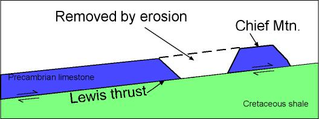 |
Abbildung 14. Eine Skizze des Chief Mountain und seine Beziehung zum Lewis-Thrust. |
Die Beobachtung, dass Chief Mountain eine Klippe ist, die mit der Lewis-Stoßzone in Verbindung steht, ist aus dem Satellitenfoto und der topografischen Karte unten leicht ersichtlich
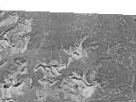 |
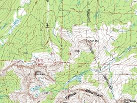 |
| Abbildung 15. Ein Satellitenfoto des Chief Mountain und des umliegenden Gebiets (der Chief Mountain ist der isolierte Gipfel in der Mitte des Fotos). Alle Berge in diesem Foto sind Überreste eines Stossblattes, das vor seiner Zerschneidung durch Erosion kontinuierlich war. USGS-Bild von TerraServer | Abbildung 16. Ein Höhenlinienplan desselben Gebiets wie das Satellitenfoto rechts. |
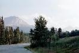 |
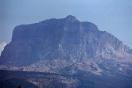 |
| Abbildung 17. Chief Mountain, gesehen vom Norden. Beachten Sie die Berge im Hintergrund; sie waren einmal Teil einer kontinuierlichen Gesteinsmasse, die den Chief Mountain einschloss, die seither durch Erosion zerschneidet wurde. | Abbildung 18. Ein näherer Blick auf den Chief Mountain |
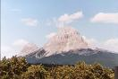 |
Abbildung 19. Der Gipfel im Foto rechts ist der Crowsnest Peak in Alberta, ein weiteres Beispiel für eine Klippe des Lewis-Stossblattes. |
{kind=link}
{kind=link}
{kind=link}
{kind=link}
{kind=link}
Whitcomb und Morris irren sich, wenn sie erwarten, dass Kreide-Schiefer auf dem Chief Mountain gefunden werden sollten, da dieser Teil einer Massenscholle ist, die über die Kreide-Schiefer geschoben wurde; die Beobachtung, dass der Chief Mountain auf Kreide-Gestein ruht, ist nicht anomal, sie ist zu erwarten.
Eine der frühen Untersuchungen des Chief Mountain wurde von Bailey Willis im Jahr 1902 durchgeführt. Willis beschreibt das Chief Mountain wie folgt:
"Die detaillierte Struktur der Algonkian-Masse oberhalb des Lewis-Überwurfs ist manchmal chaotisch, wenn man sie im Kleinen betrachtet, aber einfach, wenn man sie im Großen beobachtet. Die chaotische Struktur wird am besten am Chief Mountain gezeigt, wo das untere massive Glied des Altyn-Kalksteins zerquetscht ist (Bezug auf Abbildung weggelassen). Die Brüche teilen die Massen unregelmäßig in Blöcke aller eckigen Formen auf, die von wenigen Zoll bis 25 Fuß Seitenlänge variieren. . . Die Basis des massiven Altyn-Kalksteins wird von kleinen Überwürfen durchzogen, die oft subparallel zur Schichtung verlaufen, soweit dies feststellbar ist. Diese Überwürfe fallen 30 Grad ein und nehmen eine Zone von etwa 1.000 Fuß Dicke oberhalb des Lewis-Hauptüberwurfs ein. Sie werden oben durch einen oberen Hauptüberwurf begrenzt, der an der Basis von nahezu horizontalen dünnbankigen Kalksteinen liegt, die das obere Glied der Altyn-Formation bilden."
(S. 333-335)
Der Grund, warum ich eine Referenz verwende, die fast 100 Jahre alt ist, besteht darin, den Punkt zu veranschaulichen, dass es bereits viel Material in der Literatur gab, das sich mit der großräumigen Verformung entlang der Lewis-Stoßzone und der Beziehung des Chief Mountain zur Lewis-Stoßzone befasste, als Whitcomb und Morris The Genesis Flood erstmals veröffentlichten.
Ein Beispiel für die Bildung eines Duplexes findet sich unter dem folgenden Link:
Appalachian structure primer
http://geollab.jmu.edu/vageol/vahist/struprimer.html
Zusammenfassend lässt sich sagen, dass Chief Mountain ein hervorragendes Beispiel für Merkmale ist, die typischerweise mit Stossstörungen in Verbindung gebracht werden. Chief Mountain ist eine Klippe, ein Überrest eines Stossblocks, der durch Erosion isoliert wurde, und es handelt sich auch um ein Beispiel für ein Duplex, eine Struktur, die durch eine Reihe von Stossstörungen gebildet wurde. Chief Mountain ist zudem ein hervorragendes Beispiel für die großräumige Verformung, die mit der Lewis-Stossung verbunden ist.
Zusammenfassung
YECs (Junge-Erde-Kreationisten) liegen falsch, wenn sie behaupten, dass Stossstörungen verwendet werden, um Fossilienfolgen zu erklären, die nicht in einer Reihenfolge liegen, die von der Evolution vorhergesagt wird. Diese Behauptung basiert auf einem Missverständnis der Prinzipien der relativen Datierung (zum Beispiel die Prinzipien der Superposition und der Durchschneidungsbeziehungen) und der physikalischen Beobachtungen, anhand derer Stossstörungen erkannt werden. Zudem ist diese Behauptung angesichts der Tatsache falsch, dass Stossstörungen in nicht fossilführenden Gesteinen auftreten. Stossstörungen sind einfach die Art von Störungen, die entstehen, wenn Druckspannungen auf ein Gestein wirken. YEC-Behauptungen, dass Stossstörungen physikalisch unmöglich seien (oder nur im kleinen Maßstab möglich), oder dass sie nicht in festen Gesteinen auftreten können, werden durch geologische Beobachtungen nicht gestützt, einschließlich der offensichtlich großräumigen Verformung, die in Satellitenbildern der Appalachen sichtbar ist. Diese Behauptung basiert auch auf einer unangemessenen Extrapolation von Gesteinsmechanik-Experimenten im Ingenieurwesen auf natürliche Störungen. Die beeindruckendste Beobachtung, die die Behauptungen von Whitcomb und Morris widerlegt, ist die Tatsache, dass es viele aktive Stossstörungen gibt.
Die Behauptungen und Beobachtungen von Whitcomb und Morris über die Lewis-Stossstörung sind ungenau, und wo diese Autoren die wissenschaftliche Literatur zitieren, wird diese verzerrt dargestellt. Es gibt klare Beweise dafür, dass Bewegung entlang der Lewis-Stossstörung stattfand, zum Beispiel das Zerbrechen und Falten von Gesteinen, die Slickenlinien und polierte Oberflächen sowie das Vorhandensein einer gut entwickelten Schicht aus Störungsgeröll. Die große Verschiebung, die für die Lewis-Stossstörung berechnet wurde (10er Kilometer), basiert auf dem Abstand zwischen Merkmalen, die verschoben wurden, und Beweise für intensive, störunterstützte Verformung werden durch den Übergang von Illit-armem Material in den Schiefern unter der Störung zu Illit-reichem Material im Störungsgeröll geliefert. Andere Stössungen in der Nähe der Lewis sind ebenfalls offensichtlich großräumige Phänomene (zum Beispiel die Störungen, die in der Nähe des Mt. Crandell im Waterton-Lakes-Nationalpark in Alberta freigelegt sind).
Stossstörungen sind heute häufig und waren es auch in der Vergangenheit. Stossstörungen bilden sich normalerweise dort, wo zwei tektonische Platten kollidieren oder in der Vergangenheit kollidiert haben, und ein modernes Beispiel sind die Himalayas. Die Appalachen wurden gebildet, als der Superkontinent Pangea im Paläozoikum zusammengefügt wurde, und eine noch ältere Reihe von Bergen in Ost-Nordamerika, die jetzt vollständig erodiert ist, wurde während der Grenville-Orogenese im späten Präkambrium gebildet, als ein weiterer Superkontinent Rodinia zusammengefügt wurde. Dies sind drei Beispiele für ein geologisches Merkmal, das eines der häufigsten (und meiner Meinung nach beeindruckendsten) geologischen Strukturen auf dem Planeten ist. Die Behauptung, dass Stossstörungen nicht existieren oder nicht existieren können, ist nicht haltbar.
Referenzen
Morris, H. 1983. Diese bemerkenswerten schwebenden Felsformationen . Impact No. 119, Institute for Creation Research, El Cajon, California.
Morris, H. 1981. Die Anti-Kreationisten . Impact No. 97. Institute for Creation Research, El Cajon, California.
Morris, H. 1967. Evolution and the Modern Christian. Presbyterian and Reformed Publishing Company, Phillipsburg, New Jersey.
Numbers, R. 1993. The Creationists. University of California Press. 458 p.
Ross, C. P., and Rezak, R. 1959. The Rocks and Fossils of Glacier National Park: The Story of Their Origin and History. USGS professional paper 294-K.
Vrolijk, P., and van der Pluijm, B. A. 1999. Clay gouge. Journal
of Structural Geology, Vol. 21, pp. 1039-1048.
Whitcomb, J. C., and Morris, H. 1995. The Genesis Flood
(dreißigste Auflage). Baker Book House, Grand Rapids, Michigan.
518 p.
Zoback, M. D. 2000. Strength of the San Andreas. Nature, vol. 405, pp. 31-32.
Geologie-Links zum Lewis-Thrust
Warum zeigt der Lewis Overthrust keine Verformung? von Joe Meert
http://baby.indstate.edu/gga/pmag/crefaqs.htm#how
Geologie im Irrtum? Der Lewis-Thrust von Joel Hanes
/faqs/lewis-overthrust.html
Wie Overthrusts entstehen von Glenn Morton
http://home.entouch.net/dmd/othrust.htm
YEC-Links zum Lewis-Stoß
(zusätzlich zu den von Henry Morris in meinen Referenzen zitierten Werken)
Das Problem der geologischen Überstöße bei
pathlights.com
http://www.pathlights.com/ce_encyclopedia/12fos10.htm
Der Lewis-Stoß von Clifford L. Burdick (nach unten
scrollen)
http://www.creationresearch.org/crsq/abstracts/sum6_2.html
Das Lewis-Stoß-Fiasco bei godspointofview.com
(nach unten scrollen)
http://www.godspointofview.com/public/answers/flood.html
Erscheinen alle Fossilien in der genehmigten evolutionären Reihenfolge?
von The Creation Explanation
http://www.parentcompany.com/creation_explanation/cx3g.htm
Ein Jahrzehnt kreationistischer Forschung von Duane T. Gish
http://www.db.informatik.uni-kassel.de/~niemann/CRScopies/12_1a1.html
Northrup's Biblische Nuggets: Der Tod der Dinosaurier
von Bernard E. Northrup
http://northrup.awwwsome.com/DEATH%20OF%20THE%20DINOSAURS.html
Unter anderem behauptet Northrup fälschlicherweise, der Lewis-Stoß
gehöre zum Proterozoikum. Northrups Modell der Mehrfachkatastrophen
wird von Joe Meert an diesem Link behandelt:
Können Kreationisten die Sintflut in ein geologisches Rahmenwerk einpassen
http://baby.indstate.edu/gga/pmag/northrup.htm
Historische Geologie und „Fehlerfindung" von Douglas
B. Sharp (nach unten scrollen)
http://www.rae.org/revev2.html
HINWEIS: Sharp stellt auf seiner Seite einen vereinfachten
Querschnitt durch den Lewis-Stoß dar. Die Schichtung in den
Kreide-Schiefern unter dem Lewis-Stoß ist im Bild schräg zur
Störung und den darüberliegenden Schichten gezeichnet, und doch
behauptet Sharp im Text vor seiner Abbildung: „Die Kontaktlinie
zwischen den beiden verschiedenen Gesteinsschichten ist wie ein
Messerkante, was darauf hindeutet, dass es sich nicht um einen
Überstoß handelt, sondern dass die Schichten in dieser Reihenfolge
als Ablagerungen im Wasser entstanden sind."